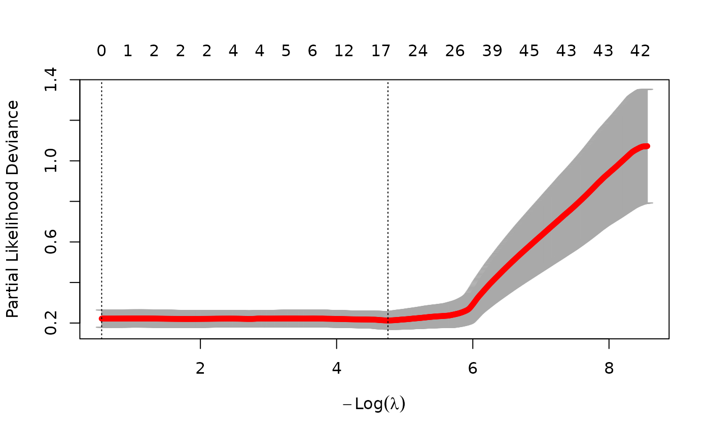
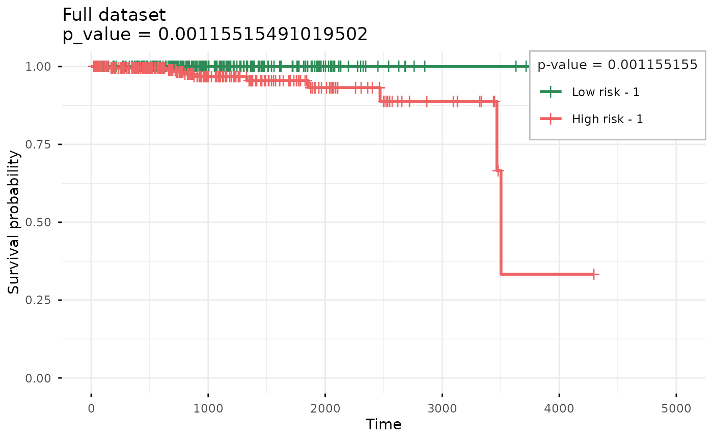

example_prad_survival.Rmd
if (!require("BiocManager")) {
install.packages("BiocManager")
}
BiocManager::install("glmSparseNet")
library(dplyr)
library(ggplot2)
library(survival)
library(futile.logger)
library(curatedTCGAData)
library(TCGAutils)
library(MultiAssayExperiment)
#
library(glmSparseNet)
#
# Some general options for futile.logger the debugging package
flog.layout(layout.format("[~l] ~m"))
options(
"glmSparseNet.show_message" = FALSE,
"glmSparseNet.base_dir" = withr::local_tempdir()
)
# Setting ggplot2 default theme as minimal
theme_set(ggplot2::theme_minimal())The data is loaded from an online curated dataset downloaded from
TCGA using curatedTCGAData bioconductor package and
processed.
To accelerate the process we use a very reduced dataset down to around 100 variables only (genes), which is stored as a data object in this package. However, the procedure to obtain the data manually is described in the following chunk.
prad <- curatedTCGAData(
diseaseCode = "PRAD", assays = "RNASeq2GeneNorm",
version = "1.1.38", dry.run = FALSE
)Build the survival data from the clinical columns.
xdata and
ydata
# keep only solid tumour (code: 01)
pradPrimarySolidTumor <- TCGAutils::TCGAsplitAssays(prad, "01")
xdataRaw <- t(assay(pradPrimarySolidTumor[[1]]))
# Get survival information
ydataRaw <- colData(pradPrimarySolidTumor) |>
as.data.frame() |>
# Find max time between all days (ignoring missings)
dplyr::rowwise() |>
dplyr::mutate(
time = max(days_to_last_followup, days_to_death, na.rm = TRUE)
) |>
# Keep only survival variables and codes
dplyr::select(patientID, status = vital_status, time) |>
# Discard individuals with survival time less or equal to 0
dplyr::filter(!is.na(time) & time > 0) |>
as.data.frame()
# Set index as the patientID
rownames(ydataRaw) <- ydataRaw$patientID
# keep only features that have standard deviation > 0
xdataRaw <- xdataRaw[
TCGAbarcode(rownames(xdataRaw)) %in% rownames(ydataRaw),
]
xdataRaw <- xdataRaw[, apply(xdataRaw, 2, sd) != 0] |>
scale()
# Order ydata the same as assay
ydataRaw <- ydataRaw[TCGAbarcode(rownames(xdataRaw)), ]
set.seed(params$seed)
smallSubset <- c(
geneNames(c(
"ENSG00000103091", "ENSG00000064787",
"ENSG00000119915", "ENSG00000120158",
"ENSG00000114491", "ENSG00000204176",
"ENSG00000138399"
))$external_gene_name,
sample(colnames(xdataRaw), 100)
) |>
unique() |>
sort()
xdata <- xdataRaw[, smallSubset[smallSubset %in% colnames(xdataRaw)]]
ydata <- ydataRaw |> dplyr::select(time, status)Fit model model penalizing by the hubs using the cross-validation
function by cv.glmHub.
set.seed(params$seed)
fitted <- cv.glmHub(xdata, Surv(ydata$time, ydata$status),
family = "cox",
nlambda = 1000,
network = "correlation",
options = networkOptions(
cutoff = .6,
minDegree = .2
)
)Shows the results of 100 different parameters used to
find the optimal value in 10-fold cross-validation. The two vertical
dotted lines represent the best model and a model with less variables
selected (genes), but within a standard error distance from the
best.
plot(fitted)
Taking the best model described by lambda.min
coefsCV <- Filter(function(.x) .x != 0, coef(fitted, s = "lambda.min")[, 1])
data.frame(
ensembl.id = names(coefsCV),
gene.name = geneNames(names(coefsCV))$external_gene_name,
coefficient = coefsCV,
stringsAsFactors = FALSE
) |>
arrange(gene.name) |>
knitr::kable()| ensembl.id | gene.name | coefficient | |
|---|---|---|---|
| AKAP9 | AKAP9 | AKAP9 | 0.2627933 |
| ALPK2 | ALPK2 | ALPK2 | -0.0738446 |
| ATP5G2 | ATP5G2 | ATP5G2 | -0.2585744 |
| C22orf32 | C22orf32 | C22orf32 | -0.2126287 |
| CSNK2A1P | CSNK2A1P | CSNK2A1P | -1.4902722 |
| MYST3 | MYST3 | MYST3 | -1.6228029 |
| NBPF10 | NBPF10 | NBPF10 | 0.4525259 |
| PFN1 | PFN1 | PFN1 | 0.4196058 |
| SCGB2A2 | SCGB2A2 | SCGB2A2 | 0.0745791 |
| SLC25A1 | SLC25A1 | SLC25A1 | -0.8526360 |
| STX4 | STX4 | STX4 | -0.1695387 |
| SYP | SYP | SYP | 0.2530633 |
| TMEM141 | TMEM141 | TMEM141 | -0.8307072 |
| UMPS | UMPS | UMPS | 0.2252967 |
| ZBTB26 | ZBTB26 | ZBTB26 | 0.3699276 |
separate2GroupsCox(as.vector(coefsCV),
xdata[, names(coefsCV)],
ydata,
plotTitle = "Full dataset", legendOutside = FALSE
)## $pvalue
## [1] 0.001155155
##
## $plot
##
## $km
## Call: survfit(formula = survival::Surv(time, status) ~ group, data = prognosticIndexDf)
##
## n events median 0.95LCL 0.95UCL
## Low risk - 1 249 0 NA NA NA
## High risk - 1 248 10 3502 3467 NA## R version 4.5.3 (2026-03-11)
## Platform: x86_64-pc-linux-gnu
## Running under: Ubuntu 24.04.3 LTS
##
## Matrix products: default
## BLAS: /usr/lib/x86_64-linux-gnu/openblas-pthread/libblas.so.3
## LAPACK: /usr/lib/x86_64-linux-gnu/openblas-pthread/libopenblasp-r0.3.26.so; LAPACK version 3.12.0
##
## locale:
## [1] LC_CTYPE=C.UTF-8 LC_NUMERIC=C LC_TIME=C.UTF-8
## [4] LC_COLLATE=C.UTF-8 LC_MONETARY=C.UTF-8 LC_MESSAGES=C.UTF-8
## [7] LC_PAPER=C.UTF-8 LC_NAME=C LC_ADDRESS=C
## [10] LC_TELEPHONE=C LC_MEASUREMENT=C.UTF-8 LC_IDENTIFICATION=C
##
## time zone: UTC
## tzcode source: system (glibc)
##
## attached base packages:
## [1] stats4 stats graphics grDevices utils datasets methods
## [8] base
##
## other attached packages:
## [1] glmSparseNet_1.29.0 TCGAutils_1.30.2
## [3] curatedTCGAData_1.32.1 MultiAssayExperiment_1.36.1
## [5] SummarizedExperiment_1.40.0 Biobase_2.70.0
## [7] GenomicRanges_1.62.1 Seqinfo_1.0.0
## [9] IRanges_2.44.0 S4Vectors_0.48.0
## [11] BiocGenerics_0.56.0 generics_0.1.4
## [13] MatrixGenerics_1.22.0 matrixStats_1.5.0
## [15] futile.logger_1.4.9 survival_3.8-6
## [17] ggplot2_4.0.2 dplyr_1.2.0
## [19] BiocStyle_2.38.0
##
## loaded via a namespace (and not attached):
## [1] RColorBrewer_1.1-3 jsonlite_2.0.0
## [3] shape_1.4.6.1 magrittr_2.0.4
## [5] GenomicFeatures_1.62.0 farver_2.1.2
## [7] rmarkdown_2.30 fs_1.6.7
## [9] BiocIO_1.20.0 ragg_1.5.1
## [11] vctrs_0.7.1 memoise_2.0.1
## [13] Rsamtools_2.26.0 RCurl_1.98-1.17
## [15] rstatix_0.7.3 htmltools_0.5.9
## [17] S4Arrays_1.10.1 forcats_1.0.1
## [19] BiocBaseUtils_1.12.0 progress_1.2.3
## [21] AnnotationHub_4.0.0 lambda.r_1.2.4
## [23] curl_7.0.0 broom_1.0.12
## [25] Formula_1.2-5 SparseArray_1.10.9
## [27] sass_0.4.10 bslib_0.10.0
## [29] desc_1.4.3 httr2_1.2.2
## [31] futile.options_1.0.1 cachem_1.1.0
## [33] GenomicAlignments_1.46.0 lifecycle_1.0.5
## [35] iterators_1.0.14 pkgconfig_2.0.3
## [37] Matrix_1.7-4 R6_2.6.1
## [39] fastmap_1.2.0 digest_0.6.39
## [41] AnnotationDbi_1.72.0 ExperimentHub_3.0.0
## [43] textshaping_1.0.5 RSQLite_2.4.6
## [45] ggpubr_0.6.3 labeling_0.4.3
## [47] filelock_1.0.3 httr_1.4.8
## [49] abind_1.4-8 compiler_4.5.3
## [51] bit64_4.6.0-1 withr_3.0.2
## [53] S7_0.2.1 backports_1.5.0
## [55] BiocParallel_1.44.0 carData_3.0-6
## [57] DBI_1.3.0 ggsignif_0.6.4
## [59] biomaRt_2.66.2 rappdirs_0.3.4
## [61] DelayedArray_0.36.0 rjson_0.2.23
## [63] tools_4.5.3 glue_1.8.0
## [65] restfulr_0.0.16 grid_4.5.3
## [67] checkmate_2.3.4 gtable_0.3.6
## [69] tzdb_0.5.0 tidyr_1.3.2
## [71] survminer_0.5.2 hms_1.1.4
## [73] car_3.1-5 xml2_1.5.2
## [75] XVector_0.50.0 BiocVersion_3.22.0
## [77] foreach_1.5.2 pillar_1.11.1
## [79] stringr_1.6.0 splines_4.5.3
## [81] BiocFileCache_3.0.0 lattice_0.22-9
## [83] rtracklayer_1.70.1 bit_4.6.0
## [85] tidyselect_1.2.1 Biostrings_2.78.0
## [87] knitr_1.51 gridExtra_2.3
## [89] bookdown_0.46 xfun_0.56
## [91] stringi_1.8.7 UCSC.utils_1.6.1
## [93] yaml_2.3.12 evaluate_1.0.5
## [95] codetools_0.2-20 cigarillo_1.0.0
## [97] tibble_3.3.1 BiocManager_1.30.27
## [99] cli_3.6.5 systemfonts_1.3.2
## [101] jquerylib_0.1.4 Rcpp_1.1.1
## [103] GenomeInfoDb_1.46.2 GenomicDataCommons_1.34.1
## [105] dbplyr_2.5.2 png_0.1-9
## [107] XML_3.99-0.22 parallel_4.5.3
## [109] pkgdown_2.2.0 readr_2.2.0
## [111] blob_1.3.0 prettyunits_1.2.0
## [113] bitops_1.0-9 glmnet_4.1-10
## [115] scales_1.4.0 purrr_1.2.1
## [117] crayon_1.5.3 rlang_1.1.7
## [119] KEGGREST_1.50.0 rvest_1.0.5
## [121] formatR_1.14